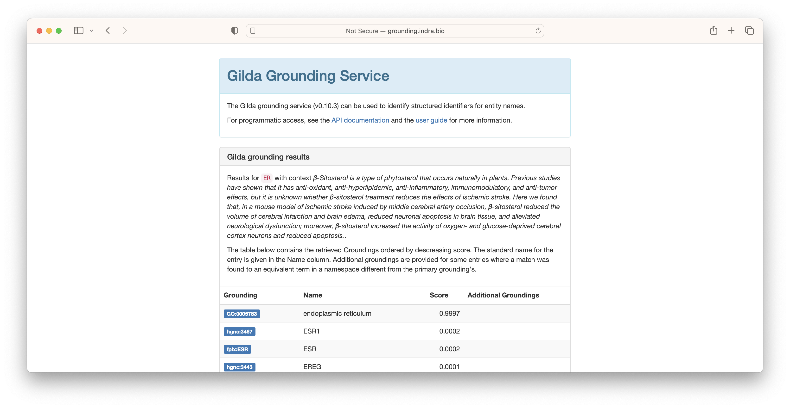

Named Entity Normalization with Gilda¶
Named Entity Normalization (NEN), also called grounding or entity resolution, is the process of identifying the appropriate ontology term for a given text string. For example, apoptotic process grounds to GO:0006915 and k-ras grounds to HGNC:6407. In this tutorial, we show how to use Gilda to apply named entity normalization both in an interactive and a programmatic setting.
Interactive Grounding¶
In order to introduce grounding, we refer to the web-based deployment of Gilda at http://grounding.indra.bio. First, type the text string you want to ground into the "Text" field. In the following example, we use k-ras.

The results are returned showing the ontology identifier, the name, and a score. Multiple groundings may be retrieved for a given text string for one of several reasons:
- The concept is duplicated across ontologies (e.g., common between DOID, MONDO, and HP)
- There are multiple different concepts that share the same name or synonyms
Warning Gilda's pre-build index is primarily targeted towards supporting biomedical relation extraction. This means it does not index all ontologies, so don't be alarmed if you get no results when trying to ground a potentially common entity label. Later, we describe how to build a custom Gilda index.

In some situations where multiple concepts share the same name or synonym, Gilda is able to use a machine learned disambiguation model. For example, the acronym ER can refer to the endoplasmic reticulum, the emergency room, or potentially be used for a chemical. In these situations, context can be given to leverage Gilda's machine learned disambiguation models.

Because the context most closely resembled the text associated with endoplasmic reticulum, this result was scored the highest.

Programmatic Grounding¶
Gilda can be installed with pip install gilda and exposes a high-level interface similar to the web interface.
k-ras can be grounded in the same way as before:
import gilda
scored_matches = gilda.ground("k-ras")
rows = [
(
scored_match.term.db + ":" + scored_match.term.id,
scored_match.term.entry_name,
scored_match.score,
)
for scored_match in scored_matches
]
| CURIE | Name | Score |
|---|---|---|
| HGNC:6407 | KRAS | 0.9936 |
Disambiguation can be run by adding the context argument.
Remote Grounding¶
The following two examples show how to run grounding by invoking the web service. Below is an example request using curl:
curl -X POST -H "Content-Type: application/json" -d '{"text": "kras"}' http://grounding.indra.bio/ground
The same request using Python's request package would be as follows:
In both examples, "context" can be used as an additional key to invoke disambiguation.
Data Science Application¶
In the tutorial From Tables to Linked Data, a table is presented that has several columns with free text, and in the course of the tutorial, the groundings are given. This table (truncated) begins as the following:
| species | organ | disease |
|---|---|---|
| RAT | LUNG | ADENOCARCINOMA |
| MOUSE | NOSE | INFLAMMATION |
| RAT | ADRENAL CORTEX | NECROSIS |
Here, we show how to use Gilda to accomplish this in practice.
import pandas as pd
import gilda
url = "https://raw.githubusercontent.com/OBOAcademy/obook/master/docs/tutorial/linking_data/data.csv"
df = pd.read_csv(url)
for column in ["species", "organ", "disease"]:
gilda.ground_df(df, source_column=column, target_column=f"{column}_curie")
print(df.to_markdown(index=False))
This results in the following (truncated):
| species | organ | disease | species_curie | organ_curie | disease_curie |
|---|---|---|---|---|---|
| RAT | LUNG | ADENOCARCINOMA | mesh:D051381 | mesh:D008168 | mesh:D000230 |
| MOUSE | NOSE | INFLAMMATION | mesh:D051379 | mesh:D009666 | GO:0006954 |
| RAT | ADRENAL CORTEX | NECROSIS | mesh:D051381 | mesh:D000302 | GO:0070265 |
Note that MeSH terms may appear instead of OBO ontology terms because the highest scored is given. This can be changed
by a namespaces argument to gilda.ground_df. Typically, the results from named entity normalization are used
in conjunction with named entity standardization.
Custom Index¶
A custom index "grounder" object, which exposes all the previously demonstrated functionality, can be created using PyOBO with:
from pyobo.gilda_utils import get_grounder
grounder = get_grounder(["mesh", "cvx"])
grounder.ground("inflammation")
A custom index can be created by instantiating gilda.Term objects and instantiating
a gilda.Grounder object.